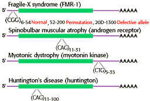

Human Genetics Problem Set
Problem 16 Tutorial: Polymorphism in Huntington's disease gene
| Which of the following describes a type of polymorphism that occurs within the gene that causes Huntington's disease? |
|
The autosomal dominant gene that is the cause of Huntington's disease has a mutation due to the expansion of a triplet sequence of (CAG) within the coding region of the gene. Since the sequence of the entire gene is now known, primers on either side of the tandem repeat sequence of (CAG)n can be used to amplify the region using the polymerase chain reaction and determine the size (number of times CAG is repeated).
The triplet repeat sequence can be classified as a STRPs, or "short tandem repeat polymorphisms" because it has the following properties:
|
| Expansion of triplet repeat sequences is now recognized as a relatively common source of mutation that leads to genetic disease. A few other examples of triplet-repeat genetic diseases are shown in the diagram below. |
|  |


University of Arizona
Revised: November 5, 1998
Contact the Development Team
http://www.biology.arizona.edu
All contents copyright © 1996-98. All rights reserved.